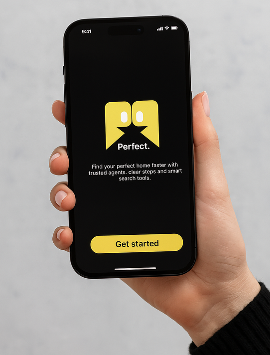
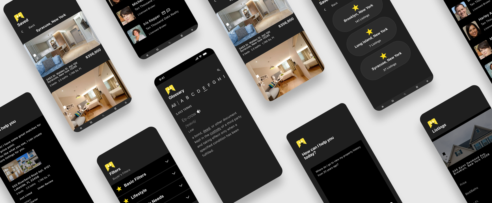
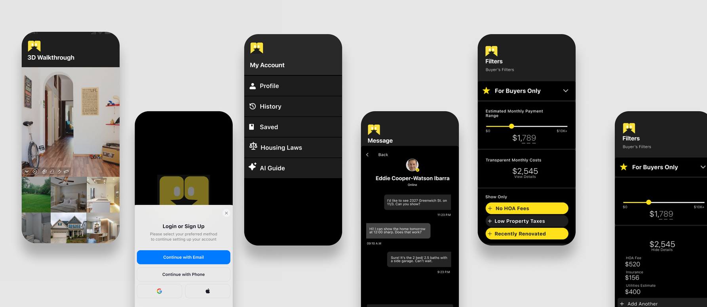
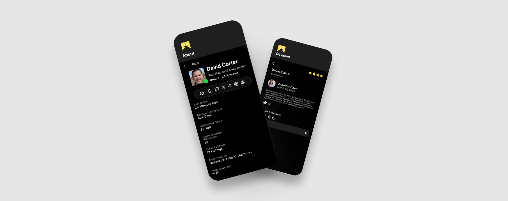

Perfect Properties

Overview
Perfect Properties is a mobile-first real estate platform designed to simplify the home-buying experience for first-time buyers. By combining property discovery, financial transparency, and centralized communication, the platform helps users make confident decisions with greater clarity and less stress.

The Problem
Traditional real estate platforms prioritize listings over the buying experience, leaving users to navigate hidden costs, unfamiliar terminology, and fragmented communication. Interviews with buyers and agents revealed that these pain points often delayed decisions and increased uncertainty throughout the home-buying process.
Constraints
The challenge was to simplify a complex process without overwhelming users with information. The experience also needed to support the needs of both buyers and agents while keeping the interface intuitive, mobile-first, and easy to navigate.

Process
I conducted competitor research, user interviews, and usability testing to uncover common frustrations. Personas, journey maps, and task flows guided the design, while low- to high-fidelity prototypes were refined through A/B testing, remote moderated testing, and iterative user feedback.

Solution
- Smarter Property Search — Personalized filters and detailed property information to support informed decisions.
- Financial Transparency — Monthly cost breakdowns and an integrated glossary to simplify complex real estate concepts.
- Centralized Communication — A built-in messaging experience that keeps buyers, agents, and sellers connected in one place.
- Guided User Experience — Streamlined navigation and clear workflows that reduce cognitive load throughout the buying journey.

Impact
Metrics represent usability testing and prototype validation conducted during the design process.